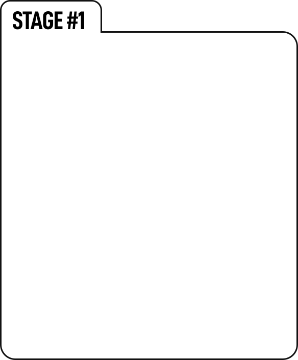
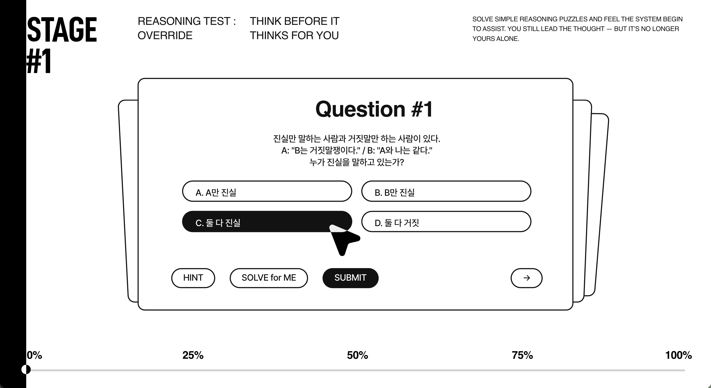
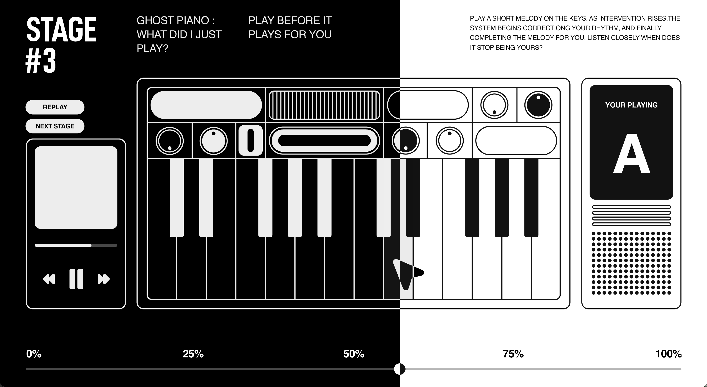
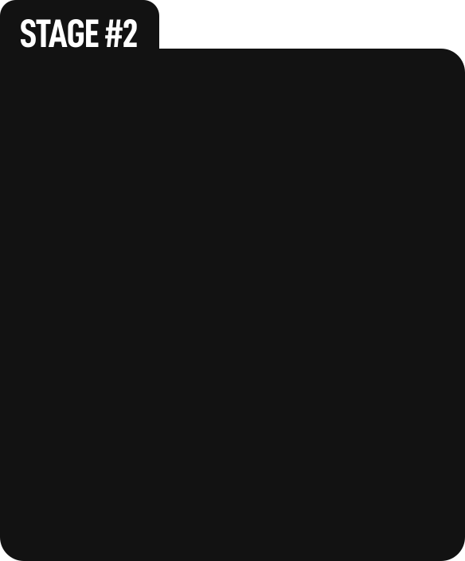
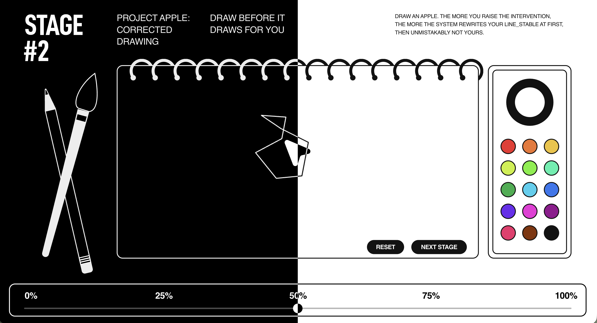

SYNTHESIS OF YOUR AUTONOMY
FIND BEFORE IT FINDS FOR YOU
ACROSS THREE TASKS, YOUR AUTHORSHIP MOVED, BENT,
AND
OCCASIONALLY FADED. THIS REPORT GATHERS THOSE MOVEMENTS AND RENDERS
THEM INTO A SINGLE VIEW.






MESSAGE